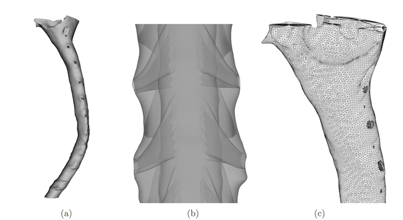
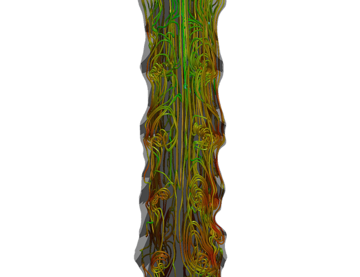

The cerebrospinal fluid (CSF) surrounds the central nervous system (CNS). For this reason, drugs are often administered through the CSF for distribution to desired regions of the CNS. However, because of large subject-specific variations and a complex oscillating flow, it has been proven difficult to predict and control the addition of drugs [1]. The master thesis of P.T Haga [2] aimed to simulate the flow and drug transport in the CSF in a subject-specific model of the cranial region of the spine using FEniCS. This article briefly describes the results of the study.
A three dimensional geometry of the cervical subarachnoid space is shown in Figure 1. The geometry was provided by Dr. Bryn Martin at the Conquer Chiari Research Center at the University of Akron, and more information can be found in [3]. The geometry contains idealized nerve roots and denticulate ligaments (NRDL) constructed manualy based on known anatomy from literature.
Figure 1: SSS geometry and computational surface mesh. (a) Complete surface model. (b) Transparent model showing nerve roots and denticulate ligaments. (c) Surface elements of the final computational mesh.
Due to very low diffusivity of the drugs, numerical issues may arise when using the Finite Element Method on the advection-diffusion equation. The Streamline Upwind/Petrov-Galerkin and Discontinuous Galerkin methods would be natural methods to implement in such convection-dominated scenarios. However, because the drug diffusivity is reported to be 2500 times smaller than the kinematic viscosity \(\nu\), the Gibbs phenomenon was observed in simplified test-cases. The Lagrangian Particle Tracking is a method where such issues are not present. This method uses discrete particles and utilizes the velocity field to compute the position of the particles. In other words, for every particle, we solve the equation
where \(x_p\) is the position of a particle \(p\), and \(u\) is the velocity field. The particle density in one cell is computed simply by using the formula
The Lagrangian Particle Tracking solver implemented for FEniCS [5] made by M. Kuchta and M. Mortensen, uses an object-oriented frame, meaning that all particles are represented by objects. At every time-step, the particles are moved subject to the velocity field, given by a dolfin-function u at time t and u_1 at time t-dt.
from dolfin import *
from LagrangianParticles import LagrangianParticles, ParticleSource
...
# Function space
V = VectorFunctionSpace(mesh, 'CG', 1)
u = Function(V) # Velocity at t
u_1 = Function(V) # Velocity at t - dt
# Initialize Lagrangian Particle Solver
lp = LagrangianParticles(V)
# Particle source
source = ParticleSource(lp, \
random_generator=RandomCircle([0.5, 0.75], 0.15))
while t < T:
# Inject particles
if t < injection_time:
source.apply(500) # Injecting 500 particles every timestep
....
lp.step(u,u_1,dt)
....
The simulations were performed using the Open Source high-performance Navier-Stokes solver Oasis [4] coupled with the Lagrangian Particle Tracking solver. The solver was run on the Abel supercomputer using 96 cores. A simulation of 13 cardiac cycles, or 10.14 seconds, used approximately 7 physical hours, or 670 CPU-hours.
The resulting velocity field revealed the formation of vortical structures in conjuction with the nerve roots and denticulate ligaments, as shown in Figure 2.
Figure 2: Streamlines of the cerebrospinal fluid shows vorticity around the nerve roots and denticulate ligaments.
The particles were injected with a velocity corresponding to a 1 ml injection over 1 minute with a 22 gauge needle. 54 particles were injected every time-step giving a total of approximately 130.000 particles after 5 cardiac cycles. Figure 3 shows an animation of the drug concentration during the 5 first cardiac cycles.

Figure 3: An animation of the drug concentration for the first 5 cardiac cycles. The color represents the number of particles per \({\rm mm}^2\).
Sensitivity analysis of lateral and longitudinal injection sites, injection angle and injection velocity was performed. This revealed a relatively large difference in drug spread with different longitudinal injection points. This result was even seen for injection points with small distance from each other. Further investigation of this phenomenon revealed that one reason for the large difference in drug spread is that jet streams are formed in certain narrow regions of the subarachnoid space. The drug was also found somewhat sensitive to different lateral injection point and injection angle, while a low sensitivity was seen for different injection velocities.
| [1] | Hocking, G. and Wildsmith, J. A. W. Intrathecal drug spread. British Journal of Anaesthesia, 93(4):568–578, 2004. doi: 10.1093/bja/aeh204. URL http://bja.oxfordjournals.org/content/93/4/568.short. |
| [2] | P.T. Haga, Numerical simulations of advection-dominated scalar mixing with applications to spinal CSF flow and drug transport, MSc thesis, University of Oslo, http://bit.ly/1K23ieZ. |
| [3] | Soroush Heidari Pahlavian, Theresia Yiallourou, R. Shane Tubbs, Alexander C. Bunck, Francis Loth, Mark Goodin, Mehrdad Raisee, and Bryn A. Martin. The impact of spinal cord nerve roots and denticulate ligaments on cerebrospinal fluid dynamics in the cervical spine. PLoS ONE, 9(4):e91888, 04 2014. doi: 10.1371/journal.pone.0091888. URL http://dx.doi.org/10.1371%2Fjournal.pone.0091888. |
| [4] | Mikael Mortensen and Kristian Valen-Sendstad. Oasis: A high- level/high-performance open source navier–stokes solver. Computer Physics Communications, 188(0):177 – 188, 2015. ISSN 0010-4655. doi: http://dx.doi.org/10.1016/j.cpc.2014.10.026. URL http://www.sciencedirect.com/science/article/pii/S0010465514003786. |
| [5] | The Lagrangian Particle Tracking solver https://github.com/MiroK/lagrangian-particles. |
{kind=link}